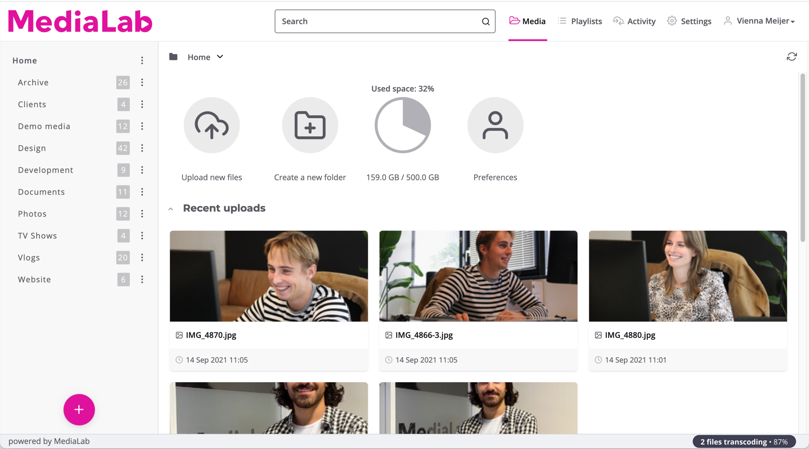
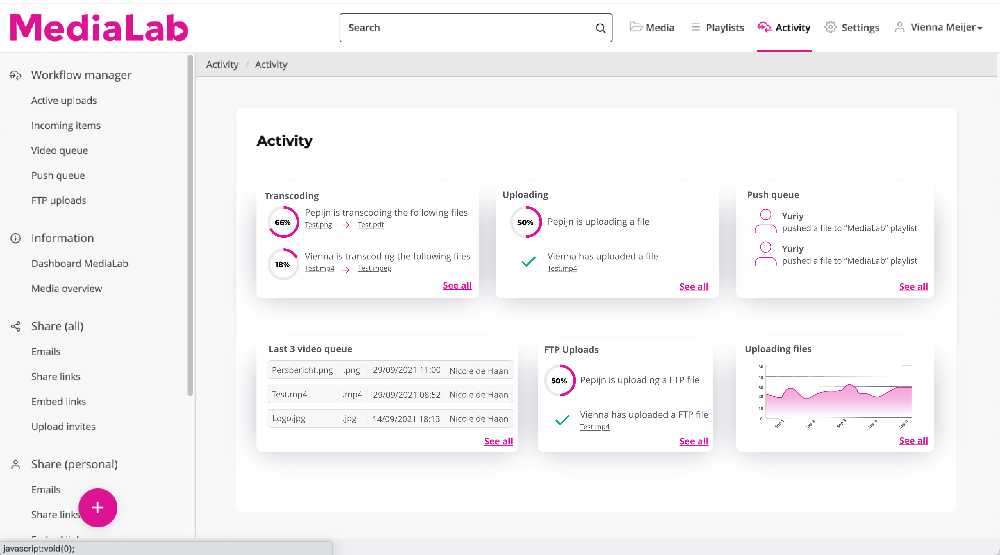
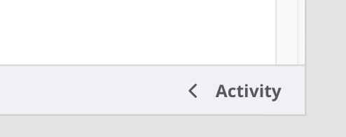
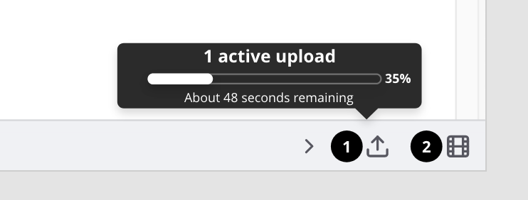
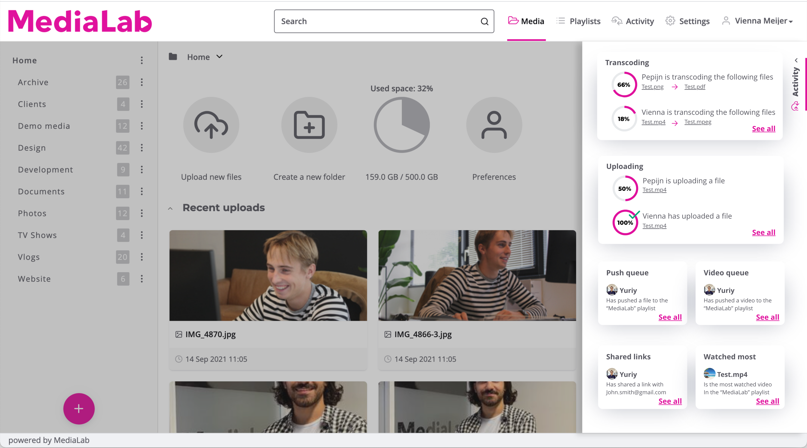

Design Process
Phase 1: Explore
Many MediaLab users are teams working together on projects within a single account. This can create complex dynamics, especially when multiple users are uploading files, managing storage, or performing other activities at the same time. To improve the user experience and increase visibility, I designed an activity dashboard. This dashboard gives users clear insight into their account activities, such as upload progress, storage usage and the activity of other team members. This allows users to always stay on top of what is going on within their account and maintain control.
In addition to the dashboard, it is also important for users to have small-scale, instant, anywhere access to what is currently going on. For example, think about tracking active uploads or queued processes. For these needs, I designed small notifications that show real-time updates on activities, such as active uploads and queued videos.
Veel MediaLab-gebruikers zijn teams die gezamenlijk aan projecten werken binnen één account. Dit kan zorgen voor een complexe dynamiek, vooral wanneer meerdere gebruikers tegelijkertijd bestanden uploaden, opslag beheren of andere activiteiten uitvoeren. Om de gebruikerservaring te verbeteren en het overzicht te vergroten, heb ik een activiteiten-dashboard ontworpen. Dit dashboard geeft gebruikers een helder inzicht in hun accountactiviteiten, zoals de voortgang van uploads, opslaggebruik en de activiteit van andere teamleden. Hiermee blijven gebruikers altijd op de hoogte van wat er speelt binnen hun account en behouden ze de controle.
Naast het dashboard is het ook belangrijk dat gebruikers op kleine schaal, direct en overal toegang hebben wat er nu speelt. Denk bijvoorbeeld aan het volgen van actieve uploads of processen die in de wachtrij staan. Voor deze behoeften heb ik kleine notificaties ontworpen die real-time updates tonen over activiteiten, zoals actieve uploads en video’s in de wachtrij.
Phase 2: Define
It was pretty clear what notifications were needed, such as notifications for active uploads and processed tasks, because users want real-time updates. Determining exactly what needed to be in the dashboard proved more difficult. What users would really find useful in the dashboard was not immediately clear, so I organized a brainstorming session with the design and development team. They know the users well and have valuable insights from their experience and user requests about the tool. This session helped define the right functionalities and ensure that the dashboard would actually meet users' needs.
Het was vrij duidelijk welke notificaties er nodig waren, zoals meldingen voor actieve uploads en verwerkte taken, omdat gebruikers real-time updates willen. Het bepalen van wat er precies in het dashboard moest komen, bleek lastiger. Wat gebruikers echt handig zouden vinden in het dashboard was niet direct duidelijk, dus organiseerde ik een brainstormsessie met het design- en developmentteam. Zij kennen de gebruikers goed en hebben waardevolle inzichten vanuit hun ervaring en verzoeken van gebruikers over de tool. Deze sessie hielp om de juiste functionaliteiten te definiëren en ervoor te zorgen dat het dashboard daadwerkelijk zou voldoen aan de behoeften van de gebruikers.
Phase 3: Develop
Then I started sketching and created various designs (make iterations) to reach my final design.
Vervolgens ben ik gaan schetsen en heb ik diverse ontwerpen gemaakt (iteraties gemaakt) om tot mijn uiteindelijke design te komen.
Sketch 1 notifications
Sketch 1 widgets

Sketch 1 dashboard

For the notifications I immediately thought of a bell icon with the number of notifications and if you click on it you will get additional information about it. I had chosen a bell because it is recognizable for users, everyone knows what it is for. Besides, MediaLab uses icons a lot so it also fits their style. I got feedback on this that it would be better to write it out, for extra clarity.
Voor de notificaties dacht ik gelijk aan een bel icoon met het aantal meldingen en als je erop klikt dat je dan extra informatie erover krijgt. Ik had gekozen voor een bel, omdat het herkenbaar is voor gebruikers, iedereen weet waar het voor dient. Daarnaast maakt MediaLab veel gebruik van icons dus het past ook in hun stijl. Ik kreeg als feedback hierop dat ik het beter kan uitschrijven, voor extra duidelijkheid.
Version 1 notifications folded

Version 1 notifications unfolded

For the dashboard, I thought it would be useful to gain insight into who last uploaded something and divide it into various categories. Last uploaded files, who is uploading something now, what is queued now etc. During the brainstorming session with the design team and development team it was decided to expand the widgets and include account and user activities.
Voor het dashboard dacht ik dat het handig zou zijn om inzicht te krijgen in wie voor het laatst iets heeft geüpload en dit onder te verdelen in verschillende categorieën. Laatst geüploade bestanden, wie is er nu iets aan het uploaden, wat staat er nu in de wachtrij etc. Tijdens de brainstormsessie met het ontwerpteam en het ontwikkelteam werd besloten om de widgets uit te breiden met account- en gebruikersactiviteiten.
Version 1 dashboard
For the second version, I incorporated the feedback from the first version. I wrote out the text with the folded version. Furthermore, I wanted to give users a little more information about the current upload so I opted for a hover with additional information but found it didn't quite fit the MediaLab style, I incorporated this in the final version.
Voor de tweede versie heb ik de feedback van de eerste versie verwerkt. Ik heb de tekst uitgeschreven bij de ingeklapte versie. Verder wilde ik gebruikers iets meer informatie over de huidige upload geven dus heb ik gekozen voor een hover met extra informatie maar vond het niet helemaal in de MediaLab stijl passen, dit heb ik in de laatste versie verwerkt.
Version 2 notifications folded
Version 2 notifications unfolded
Phase 4: Deliver
After multiple iterations and feedback sessions with various teams (design and development), this is the final version of the notifications, widgets en dashboard.
Na meerdere iteraties en feedbacksessies met verschillende teams (design and development) is dit de definitieve versie van de notificaties, widgets en dashboard.
Final design notifications empty state

Final design2 notifications folded

Final design notifications unfolded NL+EN version

Final design widgets
Final design dashboard